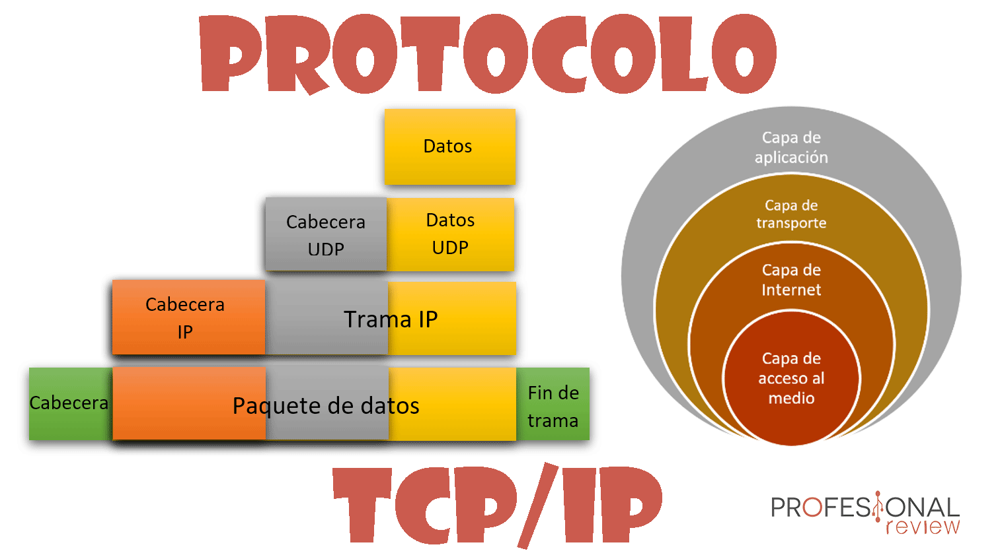

Funcionamiento del Protocolo TCP/IP
El protocolo TCP/IP utiliza un modelo de cliente-servidor para gestionar la comunicación entre dispositivos en red. Aquí se describe cómo funciona el proceso:

- Establecimiento de conexión: TCP/IP utiliza un proceso de negociación entre cliente y servidor antes de transmitir datos.
- Fragmentación de datos: TCP divide los datos en paquetes más pequeños para su transmisión.
- Reensamblado de paquetes: Los datos se vuelven a unir en el destino.
- Encabezado ip: Metainformación al comienzo del paquete IP. Muestra información como la versión de IP, la longitud del paquete, el origen y el destino.
- Fragmentación y reensamblaje: Consiste en dividir paquetes en partes más pequeñas (fragmentos) para que los segmentos resultantes puedan transmitirse a través de un enlace con una unidad de transmisión máxima (MTU) más pequeña que el tamaño del paquete original.
- Ruteo: El enrutamiento TCP/IP es el proceso fundamental que permite que los paquetes de datos lleguen a su destino correcto a través de muchas redes.